UIST ’26 · Full Paper
Granular I/O
Enabling bi-directional malleable interaction for actuated TUIs with magnetic particles.
Abstract
Granular materials — clusters of small discrete particles — afford a uniquely malleable form of physical interaction, enabling intuitive shaping, splitting, and merging through natural hand gestures. Despite their rich interaction potential, granular materials remain largely unexplored as a form factor for actuated, bi-directional Tangible User Interfaces (TUIs). We present Granular I/O, an approach that employs millimeter-scale passive magnetic particle clusters, actuated by external magnetic field controllers, to enable malleable input and output interactions for granular-based actuated TUIs. We describe a comprehensive design space for malleable granular interaction, alongside a full hardware and software implementation covering particle cluster fabrication, two actuation platforms, and authoring software. We further report technical characterization and evaluation to validate the system, and demonstrate a range of applications that harness malleable I/O for interactive use.
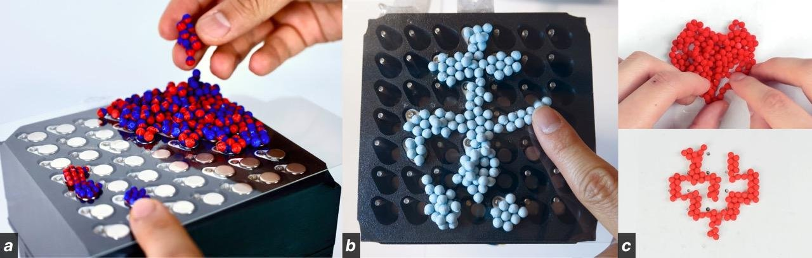
Interaction
Physical interaction with Granular I/O involves three parts: the user, magnetic particles joined into granular clusters, and a magnetic field actuator array beneath them. Clusters can be moved, split and merged, transitioned between shapes, deformed, and picked up and placed, and the system can also render haptic properties such as stiffness and vibration.
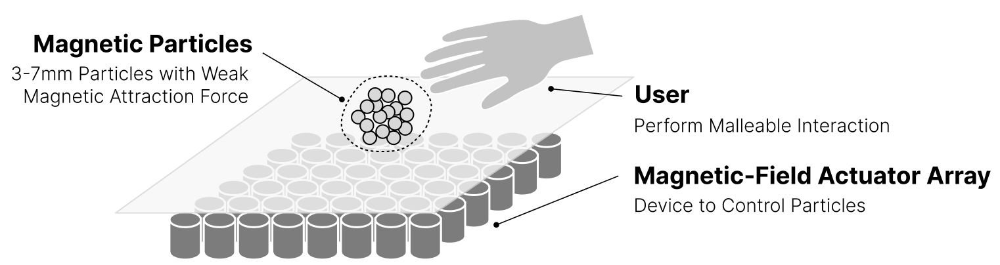
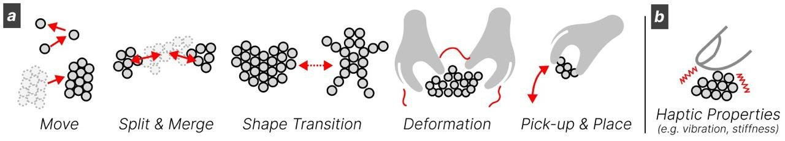
Implementation
Particles are 3D-printed shells with small magnets inserted mid-print. Two actuation platforms move them: a 7 × 7 array of linear actuated permanent magnets (LAPM) and a 4 × 4 electromagnet (EM) array. A GUI controls the actuators over a live camera view, saves shapes, and previews the tweening frames used for shape transitions.
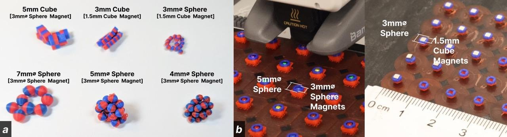
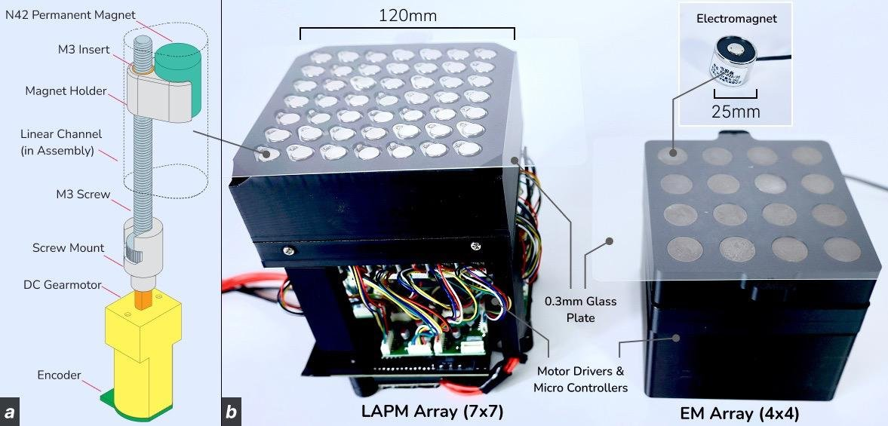
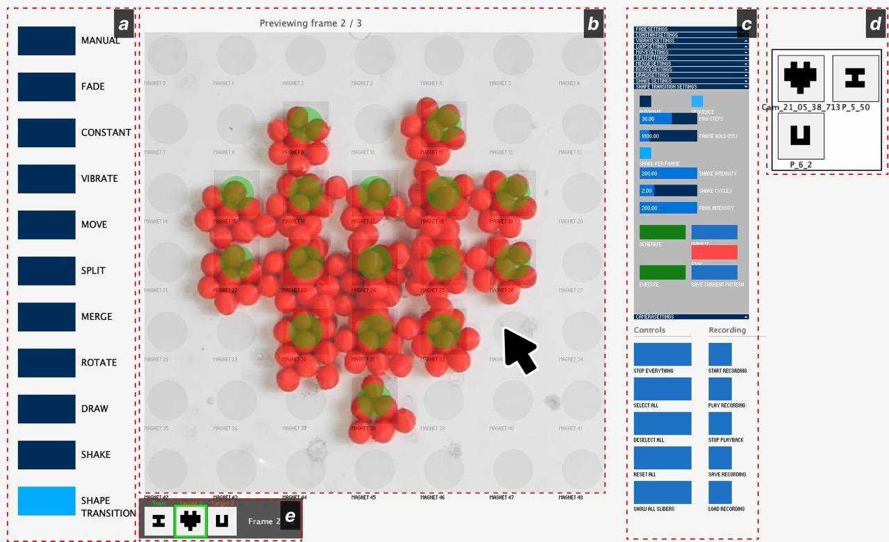
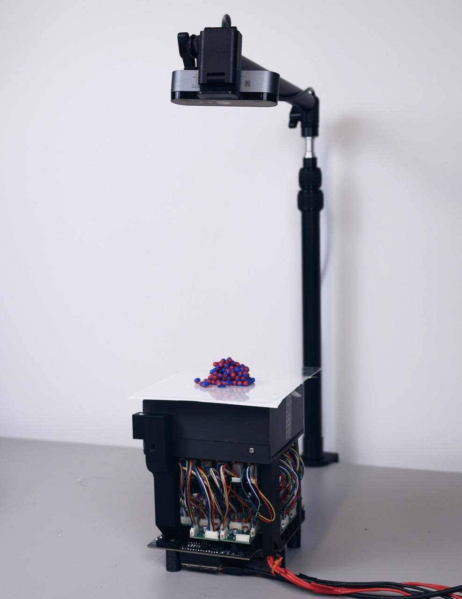
Applications
Applications include a shape display with motion and haptic properties, a reconfigurable tabletop UI with buttons and sliders, stop-motion messages that record and replay hand-made shapes, prototyping with water-soluble PVA particles that solidify into objects, and a programmable circuit built from conductive particles.
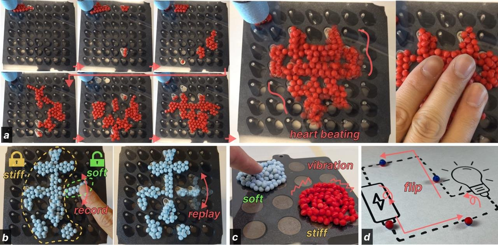
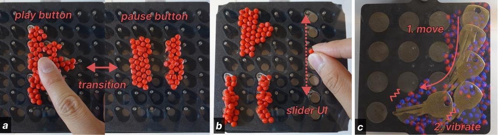
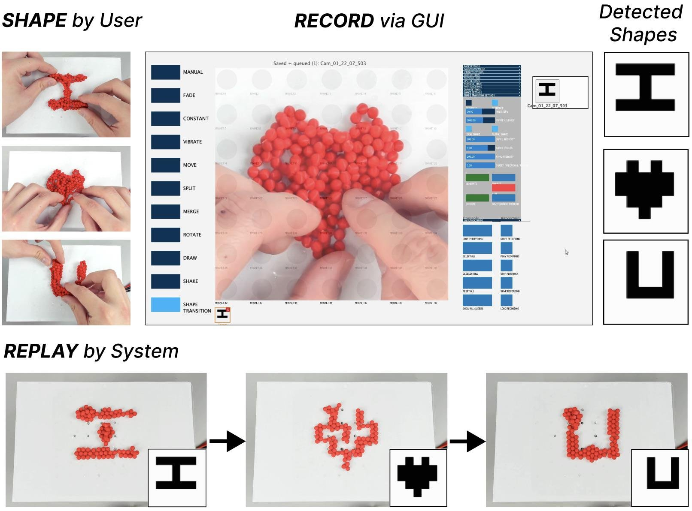
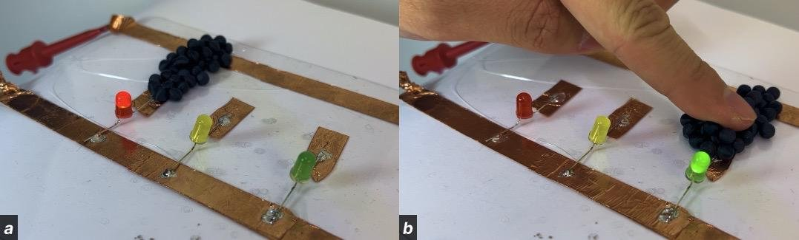
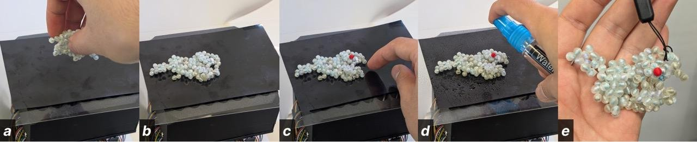
Evaluation
Technical characterization covered the magnetic field of each actuator, how reliably different particle designs and cluster sizes perform each actuation primitive, how many particles split as the magnetic intensity difference increases, and how tweening and shaking affect shape transitions.
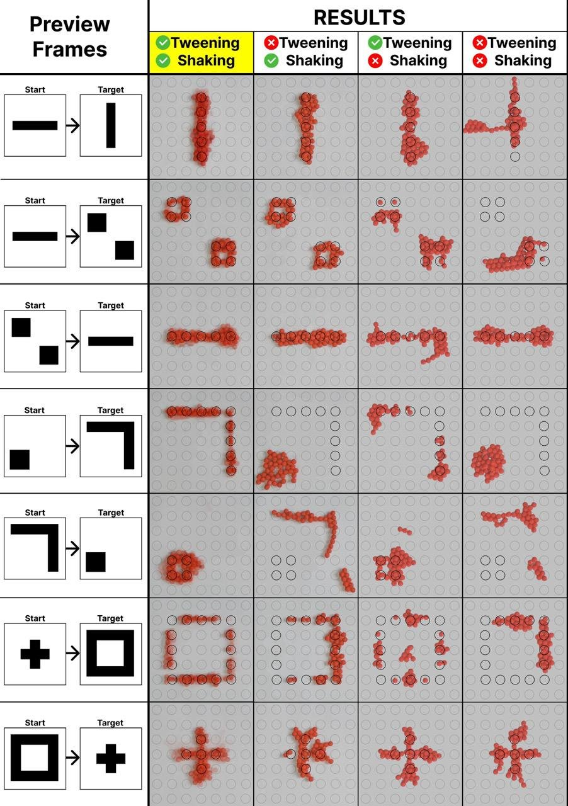
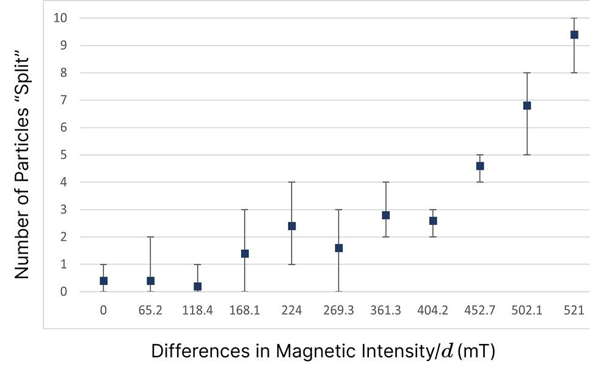
Video
Cite
Chi Wang, Clara Cui, Alan Pham, Justice T Andersen, Tucker Rae-Grant, and Ken Nakagaki. 2026. Granular I/O: Enabling Bi-directional Malleable Interaction for Actuated TUIs with Magnetic Particles. In The 39th Annual ACM Symposium on User Interface Software and Technology (UIST ’26), November 02–05, 2026, Detroit, MI, USA. ACM, New York, NY, USA, Article 43, 15 pages. https://doi.org/10.1145/3830398.3830589
@inproceedings{10.1145/3830398.3830589,
author = {Wang, Chi and Cui, Clara and Pham, Alan and Andersen, Justice T and Rae-Grant, Tucker and Nakagaki, Ken},
title = {Granular I/O: Enabling Bi-directional Malleable Interaction for Actuated TUIs with Magnetic Particles},
year = {2026},
isbn = {9798400728563},
publisher = {Association for Computing Machinery},
address = {New York, NY, USA},
url = {https://doi.org/10.1145/3830398.3830589},
doi = {10.1145/3830398.3830589},
abstract = {Granular materials — clusters of small discrete particles — afford a uniquely malleable form of physical interaction, enabling intuitive shaping, splitting, and merging through natural hand gestures. Despite their rich interaction potential, granular materials remain largely unexplored as a form factor for actuated, bi-directional Tangible User Interfaces (TUIs). We present Granular I/O, an approach that employs millimeter-scale passive magnetic particle clusters, actuated by external magnetic field controllers, to enable malleable input and output interactions for granular-based actuated TUIs. We describe a comprehensive design space for malleable granular interaction, alongside a full hardware and software implementation covering particle cluster fabrication, two actuation platforms, and authoring software. We further report technical characterization and evaluation to validate the system, and demonstrate a range of applications that harness malleable I/O for interactive use.},
booktitle = {Proceedings of the 39th Annual ACM Symposium on User Interface Software and Technology},
articleno = {43},
numpages = {15},
keywords = {Actuated Tangible User Interface; Magnetic Actuation},
location = {Detroit, Michigan, USA},
series = {UIST '26}
}